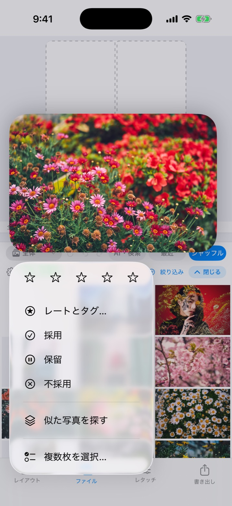
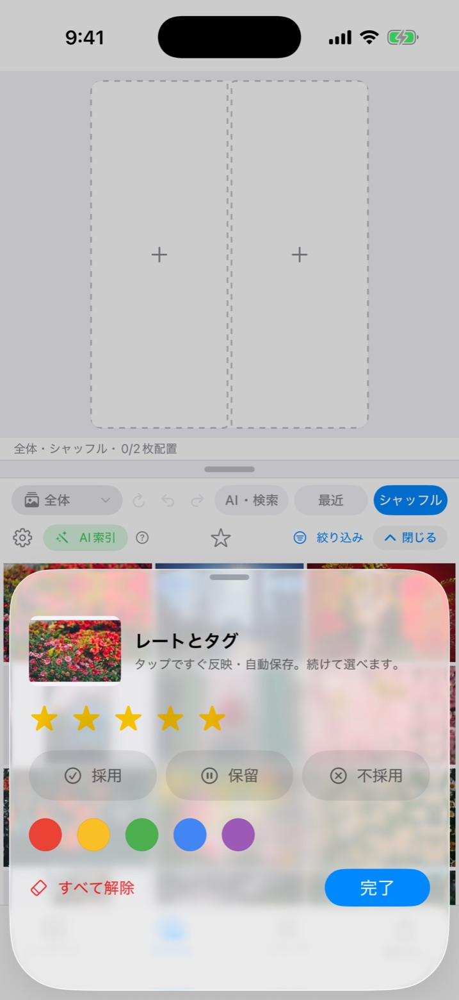
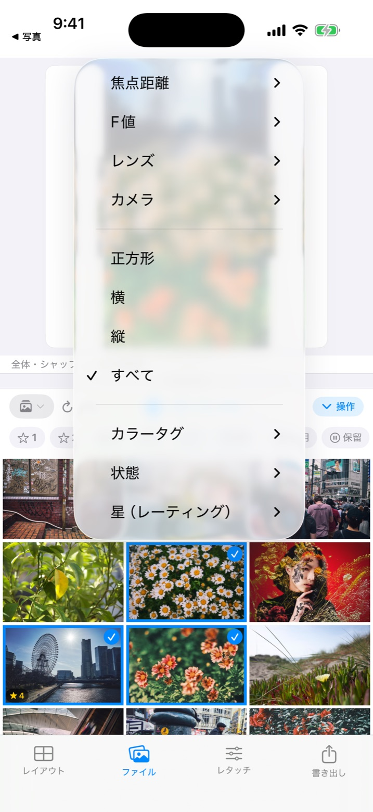
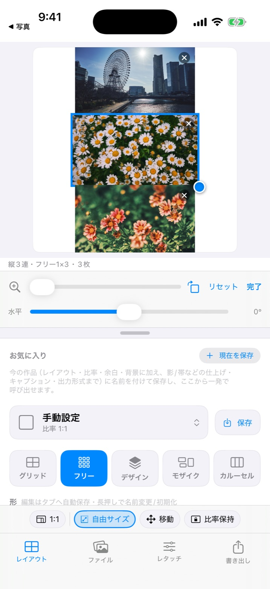
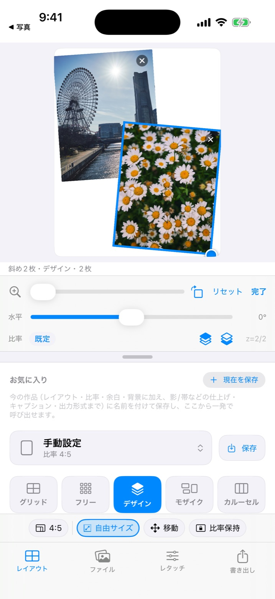
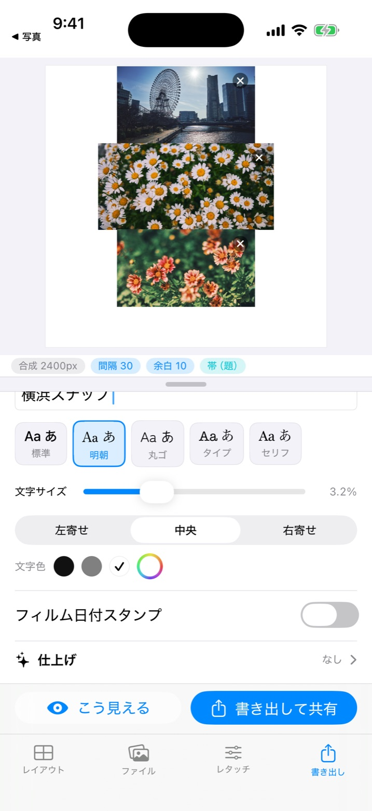
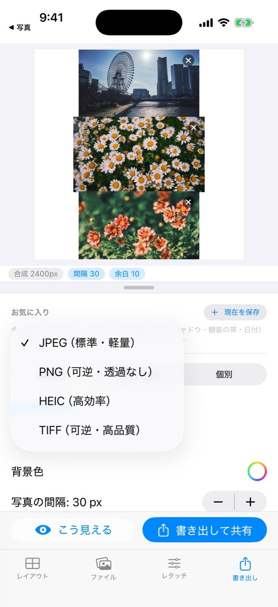
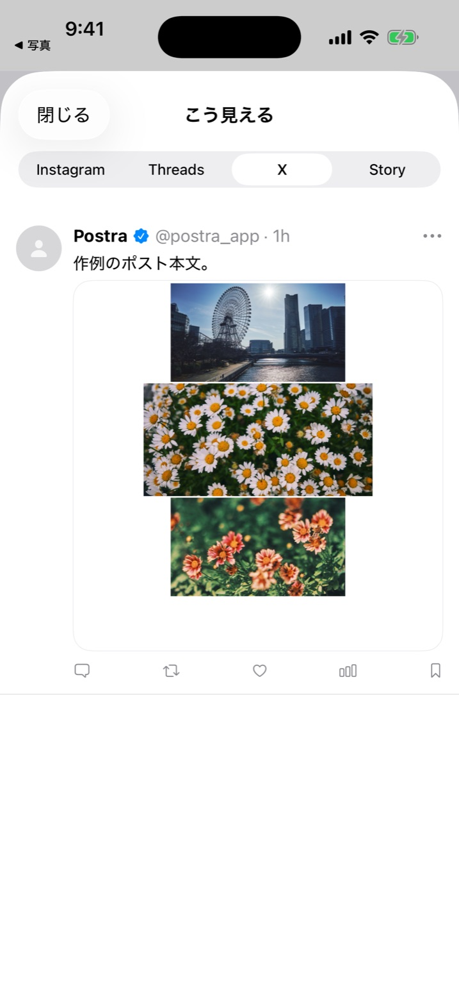

What's New
The evolution didn't stop at launch.
Postra keeps shipping. Six releases from 1.0 to 1.3 on iOS have grown the app far beyond day one. Here are the new features we most want you to try — shown on real screens.
Every change is recorded in the release notes.
iPhone / iPad
All images are actual app screens.


Half a second of long-press, and culling is done.
Long-press any thumbnail and a palette appears right there: 1–5 stars, pick / hold / reject, and 5 color tags. The Rate & Tag panel stays open as you tap, so you can keep rating photo after photo.
Filter instantly from the ☆ button, or use “Select multiple” to batch-apply and clear. Ratings live only on your device — nothing is ever written to your photo library.

Aperture, lens, stars. The fastest route to the shot.
Filter by focal length, aperture, lens, camera and orientation — and now by stars, pick state and color tags too. Sort by date taken, date edited, resolution, ISO or AI score. Even in a library of thousands, the photo you want is moments away.

Leave the grid. Frames go free.
With “Free size”, you edit each frame's position, size and ratio directly. Make one frame bigger, nudge another slightly off — shapes a grid could never give you, made with a fingertip. Edited shapes auto-save to their tab.

Move it, tilt it, layer it.
Design frames support moving, fixed-aspect resizing, rotation and z-order changes. Scattered-snapshot looks are yours to fine-tune, down to the last degree. Frequent tools live in a bar fixed to the bottom of the panel.

Style the title and shooting info, separately.
The framing band's title and shooting info each get their own font, size, color, alignment and line spacing. Five typefaces are available — standard, Mincho, rounded gothic, typewriter and serif (Mincho and rounded gothic ship as bundled open-licensed fonts).
Long shooting-info lines wrap automatically, and exports match the preview line for line.

Beyond JPEG. At full resolution.
Export as PNG, HEIC or TIFF in addition to JPEG. The long-edge setting now includes “Original”, so individual and carousel exports keep the source resolution untouched. RAW photos can be re-developed right in the app.

See the post before you post.
“How it looks” mocks up Instagram, Threads, X and Story at real proportions — check exactly how your piece gets cropped in the timeline before publishing. X ratios are measured from the real thing, with a PC / phone toggle.
And more
Mac
The Mac app also received a major update in v1.3.0 — print-like finishing and a big retouch expansion.
Print-style finishing
Framing caption band, film-style date stamp, paper grain, drop shadows and frame styles. Export your photo sets like pieces on a gallery wall.
Retouch expansion pack
Vignette, grain, 8-band HSL, preset strength %, and “Harmonize tones” to unify color across a photo set. With before / after preview.
38 design templates
Apply a full design — placement and tilt included — in one click. What you see on screen is exactly what exports.
Undo / Redo and export favorites
Two undo histories, for placement and retouch. Save finish-and-look sets under a name and recall them in one click. Plus an absolute ratio lock.
Search precision pack
An 899-word Japanese dictionary and English synonym expansion sharpen natural-language search. Search and indexing show progress, with a time estimate for indexing.
Export progress HUD
Batch exports show percentage progress, and any failures are collected into a single report at the end. Safe to walk away.
Pay once. Updates are free.
And the evolution continues. Full history in the release notes.